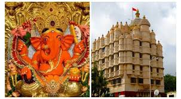
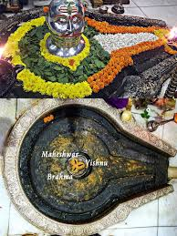
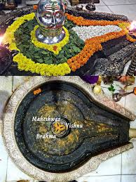

Siddhivinayak Temple

Location: Prabhadevi, Mumbai, Maharashtra
Deity: Lord Ganesha
Architecture: Modern structure with gold-plated inner sanctum
Trimbakeshwar Temple
 

Location: Trimbak town, near Nashik, Maharashtra
Deity: Lord Shiva (as Trimbakeshwar – “Lord of the Three Eyes”)
Architecture: Built with black stone in classic Hemadpanthi style